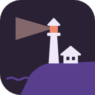

Sémaphore
Connecte-toi avec ton compte Google : l’application Android retrouvera tes favoris et tes réglages synchronisés.
Revenir dans Sémaphore
Connecte-toi avec ton compte Google : l’application Android retrouvera tes favoris et tes réglages synchronisés.
Revenir dans Sémaphore